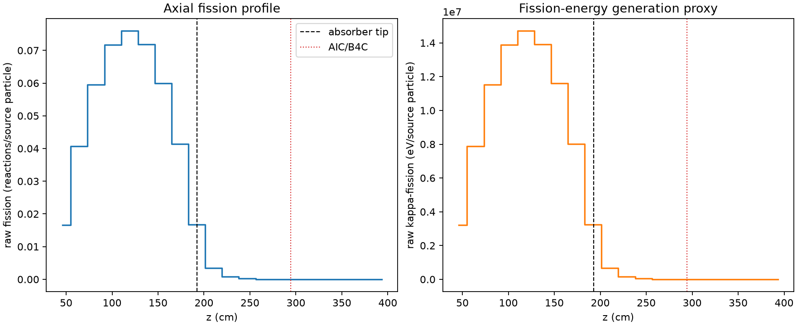
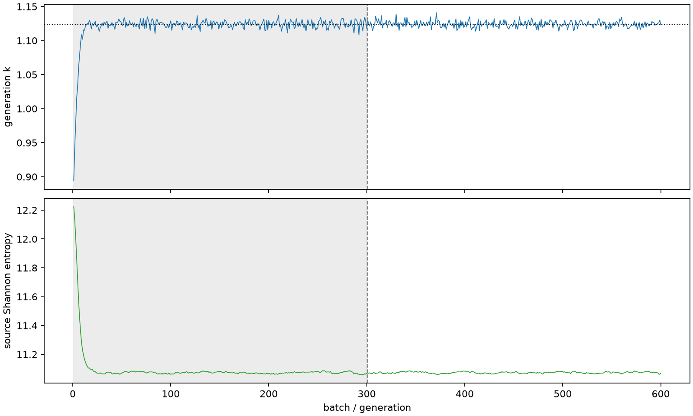

| field | value |
|---|---|
| experiment | V2-ADAPTIVE_01-0030 |
| k | 1.1238784424262234 |
| MC standard error | 0.0001860337427393914 |
| seconds | 1164.6962204489973 |
| acceptance | not_assessed |
| convergence | review_required |
Completed is output integrity only; physical and statistical review required. Zero tallies do not prove zero production or zero uncertainty.
| diagnostic | value |
|---|---|
| geometric fuel voxels | 5280 |
| zero fission tally voxels | 1018 |
| low signal fuel voxels | 2052 |
| low signal fission share | 0.00010708197962315388 |
| low signal kappa share | 0.00010712380654740446 |
| important fission share | 0.9500732587138089 |
| previous filter included | 3228 |
| duration estimate s | 1562.5173488400023 |
| actual minus estimate s | -397.821128391005 |
| fission relative MC error | statistics |
|---|---|
| all_geometric_fuel | {"voxels": 5280, "positive_mean_voxels": 4262, "zero_mean_voxels": 1018, "undefined_relative_error_voxels": 1018, "median": 0.01255017911364108, "p95": 0.9496510395172691, "maximum": 1.0000000000000002} |
| low_signal | {"voxels": 2052, "positive_mean_voxels": 1034, "zero_mean_voxels": 1018, "undefined_relative_error_voxels": 1018, "median": 0.5739621946028635, "p95": 1.0, "maximum": 1.0000000000000002} |
| important_95pct | {"voxels": 2079, "positive_mean_voxels": 2079, "zero_mean_voxels": 0, "undefined_relative_error_voxels": 0, "median": 0.006765801484363342, "p95": 0.012505882057911855, "maximum": 0.014546454715919959} |
| outside_previous_filter | {"voxels": 2052, "positive_mean_voxels": 1034, "zero_mean_voxels": 1018, "undefined_relative_error_voxels": 1018, "median": 0.5739621946028635, "p95": 1.0, "maximum": 1.0000000000000002} |
| kappa_fission relative MC error | statistics |
|---|---|
| all_geometric_fuel | {"voxels": 5280, "positive_mean_voxels": 4262, "zero_mean_voxels": 1018, "undefined_relative_error_voxels": 1018, "median": 0.012535064418424965, "p95": 0.9495045432462809, "maximum": 1.0000000000000002} |
| low_signal | {"voxels": 2052, "positive_mean_voxels": 1034, "zero_mean_voxels": 1018, "undefined_relative_error_voxels": 1018, "median": 0.5734626424672385, "p95": 1.0, "maximum": 1.0000000000000002} |
| important_95pct | {"voxels": 2079, "positive_mean_voxels": 2079, "zero_mean_voxels": 0, "undefined_relative_error_voxels": 0, "median": 0.006758500322200749, "p95": 0.012490624817481923, "maximum": 0.014529863972644521} |
| outside_previous_filter | {"voxels": 2052, "positive_mean_voxels": 1034, "zero_mean_voxels": 1018, "undefined_relative_error_voxels": 1018, "median": 0.5734626424672385, "p95": 1.0, "maximum": 1.0000000000000002} |
| axial bin | fission share | kappa-fission share |
|---|---|---|
| 1 | 0.03629826565341629 | 0.03629980225467724 |
| 2 | 0.08878961348582799 | 0.08878895196653781 |
| 3 | 0.1296009047050137 | 0.12959970774399493 |
| 4 | 0.1563424863356576 | 0.15634107039956002 |
| 5 | 0.1654881036887772 | 0.16548657542738143 |
| 6 | 0.15644456739887383 | 0.15644322761883178 |
| 7 | 0.13068550493146655 | 0.13068436269879985 |
| 8 | 0.09011540052869198 | 0.09011436389628874 |
| 9 | 0.0365013994223137 | 0.036504708183401 |
| 10 | 0.007373388105770221 | 0.007376000265637049 |
| 11 | 0.0017937494219402658 | 0.0017944040805716456 |
| 12 | 0.00043720652996210007 | 0.0004373622422129587 |
| 13 | 9.902148562455512e-05 | 9.906194622462841e-05 |
| 14 | 2.4310010697013302e-05 | 2.4320199832032484e-05 |
| 15 | 5.014441697755873e-06 | 5.016382606854428e-06 |
| 16 | 8.533200269378073e-07 | 8.536551751639135e-07 |
| 17 | 2.0717677493599423e-07 | 2.0768394206487256e-07 |
| 18 | 3.3574674339032944e-09 | 3.3543247618213088e-09 |
| 19 | 0.0 | 0.0 |
| 20 | 0.0 | 0.0 |
Histories include the inactive-to-active transition at batch 300. kappa-fission approximates fission energy production, not total heat deposition.

